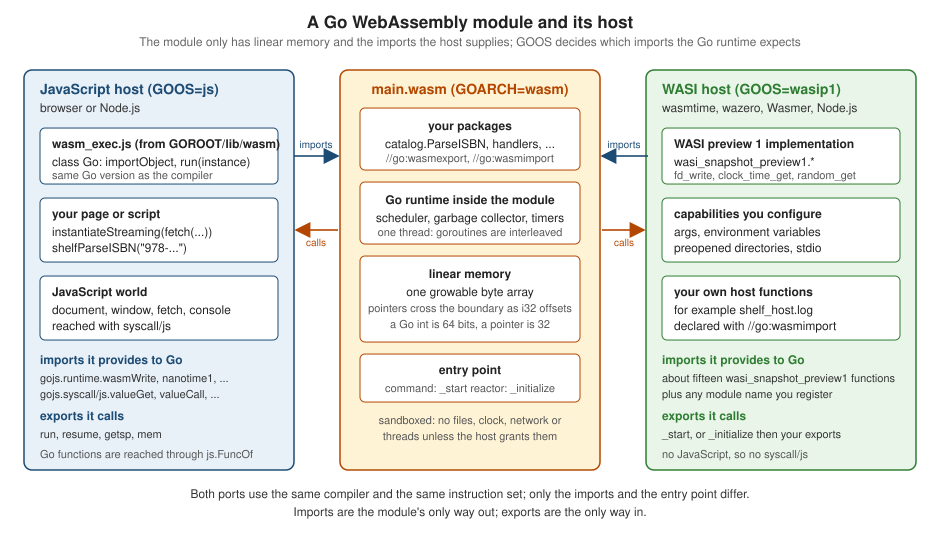

WebAssembly and WASI
|
This content was generated with the assistance of AI and should be verified against the official documentation before being relied on in production. |
This page is written against Go 1.27 (go1.27.2), checked on 2026-10-18; every go.mod shown has the line go 1.27.
WebAssembly (Wasm) is a portable, sandboxed binary instruction format. A Wasm module has no operating system, no
threads of its own and no way to touch the outside world: it owns a block of linear memory, it calls the functions
its host hands it (its imports) and the host calls the functions it chooses to publish (its exports). Browsers
were the first hosts; today Node.js, server-side runtimes (Wasmtime, wazero, WasmEdge, Wasmer), plugin systems and edge
platforms run Wasm too. Go compiles to it with the ordinary toolchain, using two ports that differ only in what the
host provides: GOOS=js for a JavaScript host and GOOS=wasip1 for a host that implements the WebAssembly System
Interface. This page covers both ports, the two compiler directives that connect Go to a host, WASI reactors, the
limits of the sandbox, and binary size.
It builds on The go Command, Builds and
Cross-Compilation (GOOS, GOARCH, build constraints and -buildmode) and on
Goroutines and the Scheduler (a Wasm module runs the
whole scheduler on one thread). The related pages are
cgo and C Interoperability (the other way out of Go, with the
same "pass memory, not objects" discipline),
unsafe and Low-Level Programming,
Directives, Code Generation and Embedding
(where //go:wasmimport and //go:wasmexport are listed among the compiler directives),
Testing,
I/O, Files and the Filesystem,
net/http Clients and Servers,
Structs and Embedding (padding and layout) and
Memory Management and Garbage Collection.
Other stacks on this site solve the same problem and are worth comparing:
Rust WebAssembly (the wasm32-* targets, wasm-bindgen, the
component model), Node.js native add-ons, WebAssembly and
FFI (the host side: WebAssembly.instantiate and node:wasi),
Kotlin/Wasm web targets and
Blazor WebAssembly. The foreign-function pages of
other languages are Rust FFI and C interop,
C# native interop and
Swift interoperability with C. For the
pointers and memory layout that a host must agree with, see the C Reference pages
Pointers and
Memory Model and Alignment.
Every example was compiled with Go 1.27.2 and vetted with go vet (with GOOS/GOARCH set for the target, because
go vet follows build constraints), and every program was run for real. The hosts used here are Node.js 24 (its
built-in node:wasi module for WASI, and wasm_exec.js for the JavaScript port) and a Chromium-based browser for the
browser examples. Wasmtime is the host the Go project’s own wrapper script assumes, and it is not installed on the
machine used for this page, so the one example that needs it is shown with the real "command not found" result and
nothing is claimed about its output. Output that depends on the machine (sizes, timings) is labelled as such. The
go.mod of the example module is:
module example.com/shelf
go 1.27The programs use the catalog package of the shelf module (ParseISBN, ISBN, MemStore, Book), the same
catalogue that the rest of this reference uses. Validation is plain Go with no operating-system dependency, which is
exactly the kind of code that moves to a Wasm host well.

Two ports, one compiler
Go supports exactly two WebAssembly ports. Both use GOARCH=wasm and produce a standard .wasm module; GOOS selects
the interface between the Go runtime and the host.
$ go tool dist list | grep -E 'wasm|wasi'
js/wasm
wasip1/wasm| Aspect | js/wasm |
wasip1/wasm |
|---|---|---|
Since |
Go 1.11 (experimental at first) |
Go 1.21 |
Host |
a JavaScript environment: a browser, or Node.js, Deno or Bun |
a WASI preview 1 runtime: Wasmtime, wazero, WasmEdge, Wasmer, Node.js |
Support file |
|
none: the host implements |
Module imports |
|
|
Entry point |
|
|
Reaching the host |
|
system calls (files, clock, random, stdio) and |
Files |
a fake file system unless the host provides |
directories the host preopens |
Networking |
fake in-memory network; |
fake in-memory network; no real sockets |
Exports for the host |
not needed: Go registers |
|
Build tags |
|
|
There is no wasip2 port: the component model and WASI preview 2 are not supported by the Go toolchain, and asking for
them says so.
$ GOOS=wasip2 GOARCH=wasm go build ./hello
go: unsupported GOOS/GOARCH pair wasip2/wasmsyscall/js is documented as experimental and exempt from the Go compatibility promise: its stated scope is to allow
tests to run, not to be a comprehensive API for users. In practice it has been stable for years and the browser
frameworks listed on the Go wiki are built on it, but its status is the reason to keep the JavaScript-facing surface of
a program small.
The architecture the code sees
On GOARCH=wasm the word size is 64 bits for int, uint and uintptr, while Wasm addresses are 32 bits. That
mismatch matters at the boundary and is shown by a measurement in the structs.HostLayout section.
The module has one linear memory; it can grow but never shrink. Wasm has no threads here, so runtime.GOMAXPROCS is 1
and goroutines are multiplexed on the single thread, exactly as described in
Goroutines and the Scheduler. Go 1.26 changed the
runtime to manage heap memory in much smaller chunks on Wasm, which reduces the memory used by applications whose heap is
below about 16 MiB, and Go 1.24 reduced the initial memory size, especially for small programs.
The compiler uses the sign-extension and non-trapping float-to-integer instructions unconditionally since Go 1.26; the
GOWASM settings signext and satconv that once switched them on are ignored. Go 1.27 adds support for 128-bit
Wasm SIMD to the experimental simd/archsimd package (enabled with GOEXPERIMENT=simd, an unstable API that is not
covered by the compatibility promise).
Building for WebAssembly
Building is cross-compilation: set GOOS and GOARCH for the command. Only a main package produces a runnable
module (building a library gives an object file that cannot run), so code to be reused on Wasm lives in ordinary
packages that a small main package wraps.
package main
import (
"fmt"
"runtime"
)
func main() {
fmt.Println("hello from", runtime.GOOS+"/"+runtime.GOARCH)
}$ GOOS=js GOARCH=wasm go build -o hello.wasm ./hello
$ GOOS=wasip1 GOARCH=wasm go build -o hello.wasm ./hello
$ file hello.wasm
hello.wasm: WebAssembly (wasm) binary module version 0x1 (MVP)The same source builds for both ports and for the native platform. The program was compiled and run for js/wasm
(below) and for wasip1/wasm; both print the target they were built for.
Selecting files with build constraints
Platform-specific code uses the ordinary mechanisms from
The go Command, Builds and
Cross-Compilation: GOOS and GOARCH file-name suffixes and //go:build lines. A js or wasip1 file suffix is a
GOOS constraint, and the expression wasm is the GOARCH constraint, so it is true on both ports.
// Package platform reports how shelf reaches its host.
package platform
// Name returns a description of the host interface in use.
func Name() string { return name }Source: cmd/go: Build constraints
package platform
// The _js suffix is a GOOS constraint: only GOOS=js builds this file.
const name = "JavaScript host (syscall/js)"Source: cmd/go: Build constraints
package platform
// The _wasip1 suffix is a GOOS constraint, too.
const name = "WASI preview 1 host"Source: cmd/go: Build constraints
//go:build !js && !wasip1
package platform
const name = "native operating system"Source: cmd/go: Build constraints
//go:build wasm
package platform
// Memory growth is only observable on GOARCH=wasm.
func init() { _ = name }These files are platform.go, platform_js.go, platform_wasip1.go, platform_other.go and wasm_only.go. go list
shows which files each target selects (this is the quickest way to debug a constraint):
$ for t in darwin/arm64 js/wasm wasip1/wasm linux/amd64; do printf "%s: " $t; GOOS=${t%/*} GOARCH=${t#*/} go list -f '{{.GoFiles}}' ./platform; done
darwin/arm64: [platform.go platform_other.go]
js/wasm: [platform.go platform_js.go wasm_only.go]
wasip1/wasm: [platform.go platform_wasip1.go wasm_only.go]
linux/amd64: [platform.go platform_other.go]A package that imports syscall/js only builds for js/wasm, so its files carry //go:build js && wasm. Building it
for the host system gives the usual error, and go vet reports the same:
$ go build ./js
package example.com/shelf/js: build constraints exclude all Go files in .../g6w8/jsRun GOOS=js GOARCH=wasm go vet ./... (and the wasip1 equivalent) in continuous integration: a plain go vet ./...
silently skips the files that the constraints exclude.
Source: cmd/go: Build constraints
The JavaScript port: GOOS=js
GOOS=js GOARCH=wasm produces a module that imports a set of gojs.* functions. The JavaScript side is
wasm_exec.js, a support file shipped with the toolchain that defines the global class Go. It builds the import
object, supplies the memory-view plumbing, implements the fs and process stubs the Go runtime needs and drives the
event loop between JavaScript and Go. Copy it from the same Go release that compiled the module; the Go wiki is
explicit that mixing versions is not supported.
$ ls $(go env GOROOT)/lib/wasm
go_js_wasm_exec
go_wasip1_wasm_exec
wasm_exec.js
wasm_exec_node.jsThe directory holds wasm_exec.js (about 17 KB, 4 KB gzipped), wasm_exec_node.js (a Node.js launcher) and the two
go_*_wasm_exec wrapper scripts that go run and go test use. Before Go 1.24 the same files lived in misc/wasm;
older tutorials point there.
The module’s imports and exports show how thin the interface is. The gojs.runtime imports are the clock, the timers,
output and random data; the gojs.syscall/js imports are the primitives behind js.Value; and the module exports only
what wasm_exec.js needs to start it and resume it after a callback.
imports: gojs.runtime.scheduleTimeoutEvent, gojs.runtime.clearTimeoutEvent, gojs.runtime.resetMemoryDataView,
gojs.runtime.wasmWrite, gojs.runtime.getRandomData, gojs.runtime.nanotime1, gojs.runtime.wasmExit,
gojs.runtime.walltime, gojs.syscall/js.finalizeRef, gojs.syscall/js.stringVal, gojs.syscall/js.valueGet,
gojs.syscall/js.valueSet, gojs.syscall/js.valueIndex, gojs.syscall/js.valueSetIndex,
gojs.syscall/js.valueLength, gojs.syscall/js.valueCall, gojs.syscall/js.valueNew,
gojs.syscall/js.valuePrepareString, gojs.syscall/js.valueLoadString, gojs.syscall/js.copyBytesToJS
exports: run, resume, getsp, memThis listing came from WebAssembly.Module.imports and WebAssembly.Module.exports applied to the shelf.wasm built
in the next section.
Running with go run and go test
go run and go test execute a cross-compiled binary through a program named go_$GOOS_$GOARCH_exec found on PATH.
Adding lib/wasm to PATH makes go run work for js/wasm with Node.js as the host; -exec names the wrapper
explicitly. (The wrapper starts node, so Node.js must be installed.)
$ GOOS=js GOARCH=wasm go run -exec="$(go env GOROOT)/lib/wasm/go_js_wasm_exec" ./hello
hello from js/wasm
$ PATH="$(go env GOROOT)/lib/wasm:$PATH" GOOS=js GOARCH=wasm go run ./hello
hello from js/wasmTests work the same way, and the unchanged catalog tests pass inside the Wasm module:
$ PATH="$(go env GOROOT)/lib/wasm:$PATH" GOOS=js GOARCH=wasm go test ./catalog
ok example.com/shelf/catalog 0.116sExposing Go functions to JavaScript
A Go program cannot export a function by name on the JavaScript port. It registers a js.Func on the JavaScript
global object, and JavaScript calls it like any other function. The program below publishes
shelfParseISBN and then blocks forever, because the Go program must stay alive for JavaScript to call back into it
(the "main must not return" rule is shown further down).
//go:build js && wasm
// Command shelfjs exposes the catalogue's ISBN validation to JavaScript.
package main
import (
"errors"
"fmt"
"syscall/js"
"example.com/shelf/catalog"
)
// parseISBN adapts catalog.ParseISBN to the func(this, args) shape that
// js.FuncOf requires. It returns a plain JavaScript object.
func parseISBN(this js.Value, args []js.Value) any {
if len(args) != 1 || args[0].Type() != js.TypeString {
return js.Global().Get("TypeError").New("parseISBN wants one string")
}
isbn, err := catalog.ParseISBN(args[0].String())
if errors.Is(err, catalog.ErrInvalidISBN) {
return map[string]any{"ok": false, "error": err.Error()}
}
return map[string]any{"ok": true, "isbn": isbn.String()}
}
func main() {
js.Global().Set("shelfParseISBN", js.FuncOf(parseISBN))
fmt.Println("shelf: ready")
select {} // keep the Go runtime alive so JavaScript can call back in
}The host is a short Node.js script: it loads wasm_exec.js, instantiates the module with the import object that the
Go class prepared, starts it with go.run and calls the registered function.
// Host: load wasm_exec.js (from GOROOT/lib/wasm), start the module, call it.
require(process.env.WASM_EXEC);
const fs = require("node:fs");
const go = new Go();
WebAssembly.instantiate(fs.readFileSync("shelf.wasm"), go.importObject).then(({ instance }) => {
go.run(instance); // returns a promise that settles when main returns
console.log(shelfParseISBN("978-0-13-468599-1"));
console.log(shelfParseISBN("978-0-13-468599-2"));
console.log(shelfParseISBN(42) instanceof TypeError);
process.exit(0);
});$ GOOS=js GOARCH=wasm go build -o shelf.wasm ./js
$ WASM_EXEC=$(go env GOROOT)/lib/wasm/wasm_exec.js node js/run.js
shelf: ready
{ ok: true, isbn: '9780134685991' }
{ ok: false, error: 'catalog: invalid ISBN: "978-0-13-468599-2"' }
trueshelf.wasm is 2,576,676 bytes on the machine used for this page (see the size section for what that number means and
how to reduce it). Note that go.run(instance) is not awaited before the first call: go.run returns a promise that
settles only when the Go main returns, which for this module is never, so await go.run(...) would hang the host
forever.
Source: syscall/js: FuncOf, Go wiki: WebAssembly
Running in a browser
In a browser the host is a web page. The page below loads wasm_exec.js, streams the module with
WebAssembly.instantiateStreaming (which requires the server to send Content-Type: application/wasm; the .wasm
extension and the correct type matter), starts it and enables a button once Go has registered its function.
<!doctype html>
<meta charset="utf-8">
<title>shelf wasm</title>
<input id="isbn" value="978-0-13-468599-1">
<button id="check" disabled>Check</button>
<output id="result"></output>
<script src="wasm_exec.js"></script>
<script>
const go = new Go();
WebAssembly.instantiateStreaming(fetch("shelf.wasm"), go.importObject).then(({ instance }) => {
go.run(instance); // do not await: main blocks forever
const button = document.getElementById("check");
button.disabled = false;
button.addEventListener("click", () => {
const r = shelfParseISBN(document.getElementById("isbn").value);
document.getElementById("result").textContent = r.ok ? "valid: " + r.isbn : r.error;
});
});
</script>The three files (index.html, wasm_exec.js, shelf.wasm) were served from an 11-line Node.js static server on
127.0.0.1 and the page was loaded in a browser. After the module started the button was enabled; clicking it with the
default value produced valid: 9780134685991, and changing the last digit to 2 produced
catalog: invalid ISBN: "978-0-13-468599-2". Any static file server works, provided it knows the application/wasm type
(http.FileServer in Go does, through the file extension). Opening index.html from a file: URL does not work in
browsers that block fetch of local files.
syscall/js: values, types and conversions
syscall/js has a small API built around one type, js.Value, a handle to a JavaScript value.
| API | Purpose |
|---|---|
|
the global object ( |
|
the two "no value" values |
|
convert a Go value; see the table below |
|
property access |
|
array access |
|
call a method or the value itself |
|
construct ( |
|
inspection |
|
convert back to Go; |
|
wrap a Go function as a JavaScript function; release it when unused |
|
copy between a Go |
|
a JavaScript |
js.ValueOf accepts a closed set of Go types and panics on anything else (a struct, a typed slice, a channel):
| Go | JavaScript |
|---|---|
|
the value itself |
|
function |
|
|
|
boolean |
integers and floats |
number |
|
string |
|
a new array |
|
a new object |
A value that crosses the boundary is copied or wrapped, never shared: a []any becomes a fresh JavaScript array, so
mutating the array in JavaScript does not touch the Go slice. Strings are copied; bytes are copied explicitly with
CopyBytesToGo and CopyBytesToJS; and a js.Value is only a reference into the JavaScript heap, which the host keeps
alive until the Go value is garbage-collected.
The wrong-type conversions panic with a js.ValueError. This program prints the types, then converts a string to an
int:
//go:build js && wasm
package main
import (
"fmt"
"syscall/js"
)
func main() {
fmt.Println(js.ValueOf(map[string]any{"n": 1, "s": "x"}).Type(), js.ValueOf([]any{1, "a"}).Length())
v := js.ValueOf("not a number")
fmt.Println(v.Type(), js.Undefined().Type(), js.Null().Type(), js.ValueOf(1.5).Type(), js.ValueOf(true).Type())
fmt.Println(v.Int())
}object 2
string undefined null number boolean
panic: syscall/js: call of Value.Int on string
goroutine 1 [running]:
syscall/js.Value.float({{}, 0x7ff8000200000016, 0x20e0b8}, {0x6f45, 0x9})
.../src/syscall/js/js.go:523 +0x10
syscall/js.Value.Int(...)
.../src/syscall/js/js.go:540
main.main()
.../js3/main.go:14 +0x2c
exit code: 2A panic prints the usual traceback and the host sees the exit code (wasm_exec.js prints exit code: 2 when the
Go object’s exit hook is not overridden). Check Type() before converting values that come from untrusted
JavaScript, exactly as parseISBN does above with args[0].Type() != js.TypeString.
Source: syscall/js: ValueOf
Callbacks, promises and goroutines
A js.Func is invoked by the JavaScript event loop. The documentation spells out the consequence: invoking the
wrapped function pauses the event loop and runs the Go function on a new goroutine, so if a wrapped function blocks,
JavaScript’s event loop is blocked until it returns. Anything that needs the event loop to make progress (a fetch, a
timer-based wait on the JavaScript side, a promise that resolves later) deadlocks if the callback waits for it. The rule
is: a blocking function starts a goroutine and returns immediately, handing the result back through a Promise.
The next program shows the three common patterns: returning a Promise from Go, passing bytes in, and calling a
JavaScript method (console.log) from Go.
//go:build js && wasm
// Command shelfjs2 shows Go calling JavaScript: a promise-returning lookup,
// a callback, byte-array copying and a call to console.log.
package main
import (
"fmt"
"syscall/js"
"time"
"example.com/shelf/catalog"
)
var store = catalog.NewMemStore()
// lookup returns a Promise. The Go work runs in its own goroutine, because
// a js.Func callback must not block waiting on the JavaScript event loop.
func lookup(this js.Value, args []js.Value) any {
isbn := catalog.ISBN(args[0].String())
handler := js.FuncOf(func(_ js.Value, p []js.Value) any {
resolve, reject := p[0], p[1]
go func() {
time.Sleep(10 * time.Millisecond) // pretend to wait for I/O
b, ok := store.Get(isbn)
if !ok {
reject.Invoke(js.Global().Get("Error").New("not found: " + string(isbn)))
return
}
resolve.Invoke(b.Title)
}()
return nil
})
// The executor has already run by the time New returns, so release it.
defer handler.Release()
return js.Global().Get("Promise").New(handler)
}
// checksum copies a Uint8Array into Go memory and back out again.
func checksum(this js.Value, args []js.Value) any {
buf := make([]byte, args[0].Get("length").Int())
n := js.CopyBytesToGo(buf, args[0])
var sum byte
for _, b := range buf[:n] {
sum += b
}
return int(sum)
}
func main() {
store.Put(catalog.Book{ISBN: "9780134685991", Title: "Effective Java"})
js.Global().Set("shelfLookup", js.FuncOf(lookup))
js.Global().Set("shelfChecksum", js.FuncOf(checksum))
console := js.Global().Get("console")
console.Call("log", "hello from Go:", fmt.Sprintf("%d books", len(store.All())))
select {}
}require(process.env.WASM_EXEC);
const fs = require("node:fs");
const go = new Go();
WebAssembly.instantiate(fs.readFileSync("shelf2.wasm"), go.importObject).then(async ({ instance }) => {
go.run(instance);
console.log(await shelfLookup("9780134685991"));
await shelfLookup("0000000000000").catch((e) => console.log("rejected:", e.message));
console.log(shelfChecksum(new Uint8Array([1, 2, 3, 200])));
process.exit(0);
});hello from Go: 1 books
Effective Java
rejected: not found: 0000000000000
206Three details of this program are the usual sources of leaks and crashes:
-
js.FuncOfallocates a table entry that is never garbage-collected: callRelease()when the function will not be called again. The Promise executor is called synchronously by thePromiseconstructor, so it is released withdeferright afterNew. The long-lived functions published on the global object are never released, which is intended. -
The
resolveandrejectvalues arejs.Valuehandles, valid to call from the goroutine because JavaScript’s single thread is only entered when Go calls into it. -
time.Sleepinside the goroutine does not block the event loop: the Go timer is implemented with the host’ssetTimeout(thescheduleTimeoutEventimport listed earlier).
Calling a released function from JavaScript does not panic in Go: the host logs call to released function and the call
returns undefined, which is easy to miss. Release a function only when nothing can still call it.
main must not return
When main returns the Go program has exited. wasm_exec.js marks the Go object as exited and every later call
into Go fails. That is why the programs above end in select {} (or block on a channel that a shutdown function closes).
//go:build js && wasm
package main
import "syscall/js"
func main() {
js.Global().Set("hi", js.FuncOf(func(this js.Value, args []js.Value) any { return "hi" }))
// main returns: the Go program has exited.
}require(process.env.WASM_EXEC);
const fs = require("node:fs");
const go = new Go();
WebAssembly.instantiate(fs.readFileSync("js4.wasm"), go.importObject).then(async ({ instance }) => {
await go.run(instance);
console.log("exit code:", go.exited);
try { console.log(hi()); } catch (e) { console.log("error:", e.message); }
});exit code: true
error: Go program has already exitedThe promise returned by go.run settles when main returns, which is how a command-line Go program built for
js/wasm signals completion to its host. The Go object also has hooks a host can set before run: argv (the
program arguments, default ["js"]), env (the environment) and exit (called with the exit code). The launcher
wasm_exec_node.js sets all three from the Node.js process.
Source: syscall/js
net/http in the browser, and in Node.js
On js/wasm the default http.Transport is replaced by one implemented with the host’s fetch function, so an
ordinary http.Client works in a browser subject to the browser’s rules. CORS applies exactly as it does to
JavaScript: a cross-origin request needs a response with the right Access-Control-Allow-Origin header (see
CORS for the protocol). A Go program cannot listen: a browser tab cannot accept connections, and
net.Listen only reaches the in-memory network described later.
//go:build js && wasm
// Command shelffetch uses net/http inside WebAssembly: in a browser the
// default transport is implemented with the host's fetch function.
package main
import (
"context"
"encoding/json"
"fmt"
"net/http"
"os"
"syscall/js"
"time"
)
func main() {
// Ask the page where it was loaded from; a relative URL would be rejected.
origin := js.Global().Get("location").Get("origin").String()
ctx, cancel := context.WithTimeout(context.Background(), 5*time.Second)
defer cancel()
req, err := http.NewRequestWithContext(ctx, http.MethodGet, origin+"/books/9780134685991", nil)
if err != nil {
fmt.Println(err)
os.Exit(1)
}
resp, err := http.DefaultClient.Do(req)
if err != nil {
fmt.Println("request:", err)
os.Exit(1)
}
defer resp.Body.Close()
var book struct {
ISBN string `json:"isbn"`
Title string `json:"title"`
}
if err := json.NewDecoder(resp.Body).Decode(&book); err != nil {
fmt.Println("decode:", err)
os.Exit(1)
}
fmt.Println(resp.Status, book.ISBN, book.Title)
}Loaded in a browser from a local server that answers /books/<isbn> with a JSON object, with console.log mirrored
into a <pre> element, the page showed:
200 OK 9780134685991 Effective Java
doneThe context passed to the request is honoured: cancelling it aborts the underlying fetch through an
AbortController when the browser has one. Three behaviours are worth knowing before relying on this:
-
fetchoptions that have nonet/httpequivalent are passed as request headers whose names start withjs.fetch:(js.fetch:mode,js.fetch:credentials,js.fetch:redirect); the transport removes them before sending. They are documented in the source of the transport. The credentials default issame-origin. -
Under Node.js the transport deliberately does not use
fetch: it detects Node.js and falls back to the same in-memory fake network that the tests of the standard library use, so ahttp.Getto a real server from ajs/wasmprogram running in Node.js does not reach it. Do real network work in the browser, or pass the data in from JavaScript. -
A custom
http.Transportthat setsDialContextand friends also bypassesfetchand uses the fake network.
Source: net/http: Transport.RoundTrip
Browser frameworks and the DOM
The DOM is reached with js.Global().Get("document") and the methods of js.Value. That is verbose, which is why the Go
wiki lists community libraries (Vecty, Vugu, app, DOM binding generators) that wrap syscall/js. Treat them as
optional, community-maintained dependencies: none ships with Go, and their release cadence is independent of the
toolchain. Because wasm_exec.js and the compiler must come from the same Go release, upgrading Go means rebuilding
every module and republishing the matching wasm_exec.js; a stale cached copy of either one is the most common cause
of "WebAssembly.instantiate(): Import #0 module="gojs" function=…" link errors after an upgrade.
The WASI port: GOOS=wasip1
WASI, the WebAssembly System Interface, defines how a Wasm module reaches the operating system: arguments,
environment variables, files, clocks, random data, standard streams and process exit. Go targets the first released
version, preview 1, whose module name is wasi_snapshot_preview1 and which gave the port its wasip1 name. The
blog post introducing the port notes that new WASI versions will likely mean new GOOS values, which is why a preview 2
target is a different, so-far-absent port. WASI is capability based: the host decides which directories, environment
variables and streams the module can see; nothing is ambient.
A WASI module that imports almost nothing is already fully functional:
empty wasip1 module: 10 imports, exports: _start, memoryThe ten imports are the preview 1 functions the runtime always needs: args_get, args_sizes_get, environ_get,
environ_sizes_get, clock_time_get, random_get, fd_write, poll_oneoff, sched_yield and proc_exit. A program that
reads and writes files imports more (the reactor below imports fifteen wasi_snapshot_preview1 functions, adding the
file-descriptor and preopen calls the runtime uses to initialize standard streams). Everything else is Go code compiled into the module, including the scheduler, the
garbage collector and the standard library; that is why even an empty program is about 1.9 MB.
A command: standard input, arguments and a preopened directory
A WASI command has a _start entry point and runs main to completion, like an ordinary process. The following
program reads ISBNs from standard input, validates them with the catalog package and writes a report file. It is
ordinary Go: there is nothing Wasm-specific in it.
// Command isbncheck validates ISBNs read from standard input. It is an
// ordinary Go program: it also builds for wasip1/wasm with no changes.
package main
import (
"bufio"
"fmt"
"os"
"path/filepath"
"runtime"
"example.com/shelf/catalog"
)
func main() {
fmt.Printf("platform: %s/%s, args: %q\n", runtime.GOOS, runtime.GOARCH, os.Args[1:])
valid, invalid := 0, 0
sc := bufio.NewScanner(os.Stdin)
for sc.Scan() {
if _, err := catalog.ParseISBN(sc.Text()); err != nil {
invalid++
fmt.Fprintln(os.Stderr, "invalid:", err)
continue
}
valid++
}
if err := sc.Err(); err != nil {
fmt.Fprintln(os.Stderr, err)
os.Exit(1)
}
// The WASI host decides which directories exist at all.
dir := os.Getenv("SHELF_DATA")
if dir == "" {
dir = os.TempDir()
}
report := fmt.Sprintf("valid=%d invalid=%d\n", valid, invalid)
if err := os.WriteFile(filepath.Join(dir, "report.txt"), []byte(report), 0o644); err != nil {
fmt.Fprintln(os.Stderr, "write report:", err)
os.Exit(2)
}
fmt.Print(report)
}The host here is a minimal script around Node’s built-in node:wasi module. It preopens one real directory as /data
inside the module and passes SHELF_DATA=/data in the environment; the module sees no other directory.
// Minimal WASI host for a Go wasip1 command, using Node's built-in node:wasi.
import { readFileSync } from "node:fs";
import { WASI } from "node:wasi";
const [, , file, ...args] = process.argv;
const wasi = new WASI({
version: "preview1",
args: [file, ...args],
env: { SHELF_DATA: process.env.GUEST_DIR ?? "/data" },
preopens: { "/data": process.env.DATA_DIR },
});
const { instance } = await WebAssembly.instantiate(readFileSync(file), wasi.getImportObject());
process.exitCode = wasi.start(instance);$ GOOS=wasip1 GOARCH=wasm go build -o isbncheck.wasm ./cmdwasi
$ printf '978-0-13-468599-1\n978-0-13-468599-2\n' | DATA_DIR=$PWD/data node --no-warnings wasi/run.mjs isbncheck.wasm a b
platform: wasip1/wasm, args: ["a" "b"]
invalid: catalog: invalid ISBN: "978-0-13-468599-2"
valid=1 invalid=1
$ cat data/report.txt
valid=1 invalid=1Standard input, standard error, the arguments (a b), the environment variable and the file write all went through
WASI calls (fd_read, fd_write, args_get, environ_get, path_open); the program contains no //go:wasmimport and
no host-specific code. When the host does not preopen the directory, the same module fails with the error of a
missing capability, not with a security exception:
$ printf '9780134685991\n' | DATA_DIR=$PWD/data GUEST_DIR=/nope node --no-warnings wasi/run.mjs isbncheck.wasm
platform: wasip1/wasm, args: []
write report: open /nope/report.txt: Invalid argument
$ echo $?
2In that run /nope was set as SHELF_DATA while only /data was preopened; a module with no preopens at all fails the
same way for every path. The lesson for tests and for ports is that a file name must be resolved relative to what the
host granted. os.TempDir() inside a WASI module is a path in the guest’s view, not the host’s, and it exists only if
the host preopened it. Go 1.24’s os.Root (see I/O, Files
and the Filesystem) pairs naturally with this model, because it restricts access to a directory tree in the same way.
The node:wasi module is marked experimental, and its documentation states that its capability features "do not form a
security model": the file-system sandboxing can be escaped, so it should not be used to run untrusted code. The Go
module is only as isolated as the host that runs it; Wasmtime, wazero, WasmEdge and Wasmer implement the capability model
with stronger guarantees.
go run and go test with a WASI host
The toolchain ships go_wasip1_wasm_exec, a wrapper that go run and go test use when lib/wasm is on PATH or when
-exec names it. The script picks the host from GOWASIRUNTIME; the supported values are wasmtime (the default),
wazero, wasmedge and wasmer, and GOWASIRUNTIMEARGS passes extra arguments. It starts the module with the whole
file system mapped (--dir=/) and an enlarged stack.
$ GOOS=wasip1 GOARCH=wasm go run -exec="$(go env GOROOT)/lib/wasm/go_wasip1_wasm_exec" ./hello
/Users/.../sdk/go1.27.2/lib/wasm/go_wasip1_wasm_exec: line 17: exec: wasmtime: not found
exit status 127That is the real result on the machine used for this page, which has no Wasmtime: this example was not run with
Wasmtime, and no Wasmtime output is claimed. With Wasmtime installed the same command prints the greeting. Nothing in
the pipeline needs the project’s script, though: -exec accepts any program that takes the binary and its arguments, so
a three-line Node.js launcher works just as well, and it is what the next example uses.
#!/usr/bin/env node
// A go test -exec wrapper: run the test binary with Node's WASI host.
import { readFileSync } from "node:fs";
import { WASI } from "node:wasi";
const [, , file, ...args] = process.argv;
const wasi = new WASI({
version: "preview1",
args: [file, ...args],
env: process.env,
preopens: { "/": "/" },
returnOnExit: true,
});
const { instance } = await WebAssembly.instantiate(readFileSync(file), wasi.getImportObject());
process.exitCode = wasi.start(instance);$ GOOS=wasip1 GOARCH=wasm go run -exec="$PWD/wasi/node_wasi_exec.sh" ./hello
hello from wasip1/wasm
$ GOOS=wasip1 GOARCH=wasm go test -exec="$PWD/wasi/node_wasi_exec.sh" ./catalog
ok example.com/shelf/catalog 0.096s(node_wasi_exec.sh is a one-line shell script that runs node --no-warnings on the .mjs file above.) The unchanged
catalog tests pass in a WASI module, which is the practical test that a package is portable: running its suite on both
wasip1 and js catches accidental dependence on threads, processes and sockets.
What the sandbox does not give you
Both ports run the full Go runtime, but the host defines the world. This program probes five capabilities: parallelism, goroutines and timers, process execution, networking and a connection to an address outside the module.
package main
import (
"fmt"
"io"
"net"
"os"
"os/exec"
"runtime"
"sync"
"time"
)
func main() {
fmt.Println("GOMAXPROCS:", runtime.GOMAXPROCS(0), "NumCPU:", runtime.NumCPU())
var wg sync.WaitGroup
var mu sync.Mutex
total := 0
for i := 1; i <= 100; i++ {
wg.Add(1)
go func() {
defer wg.Done()
time.Sleep(time.Millisecond)
mu.Lock()
total += i
mu.Unlock()
}()
}
wg.Wait()
fmt.Println("goroutines and timers work, total =", total)
cmd := exec.Command("/usr/bin/true")
cmd.Stdin, cmd.Stdout, cmd.Stderr = os.Stdin, os.Stdout, os.Stderr
fmt.Println("os/exec:", cmd.Run())
// Listen and dial both succeed, but only between goroutines of this
// one module: the standard library fakes the network in memory.
ln, err := net.Listen("tcp", "127.0.0.1:0")
if err != nil {
fmt.Println("listen:", err)
return
}
go func() {
c, _ := ln.Accept()
io.WriteString(c, "hello over the fake network\n")
c.Close()
}()
c, err := net.Dial("tcp", ln.Addr().String())
if err != nil {
fmt.Println("dial:", err)
return
}
msg, _ := io.ReadAll(c)
fmt.Print(string(msg))
_, err = net.DialTimeout("tcp", "93.184.216.34:80", time.Second)
fmt.Println("dial outside:", err)
}The output on wasip1/wasm (run in Node’s WASI host), on js/wasm and, for the third line, on the native platform:
GOMAXPROCS: 1 NumCPU: 1
goroutines and timers work, total = 5050
os/exec: fork/exec /usr/bin/true: Not implemented on wasip1
hello over the fake network
dial outside: dial tcp 93.184.216.34:80: address 93.184.216.34:80: connect: Connection refusedOn js/wasm the process line reads fork/exec /usr/bin/true: not implemented on js; natively os/exec succeeds (<nil>)
and the final line is an i/o timeout from a real dial attempt. (The native run has GOMAXPROCS equal to the number of
CPUs.) The practical reading:
| Capability | On Wasm |
|---|---|
Parallelism |
none: one thread, |
Goroutines, timers, |
work; a goroutine that is blocked in a host call blocks every goroutine until the call returns |
|
not available ( |
Files |
js: a stub; wasip1: only what the host preopens |
Sockets |
no real ones. The standard library implements a fake in-memory network "to allow tests of other packages to pass"; listening and dialling work between goroutines of the same module and nothing else |
Listening servers |
a |
Environment |
js: |
Cgo |
not available: |
WASI preview 1 defines operations on already opened sockets but no way to open one, so a network server needs a host
extension (Wasmer and WasmEdge have them) and a library that bridges to it through //go:wasmimport; the Go blog names
the community stealthrocket/net package as one such bridge. A host that preopens a listening socket can also hand it
to the program as an os.File that net.FileListener turns into a listener; that path is host-specific and
not exercised here. Cgo is not an option either; asking for it fails inside the toolchain, not in your code:
$ CGO_ENABLED=1 GOOS=wasip1 GOARCH=wasm go build ./t2
# runtime/cgo
cgo: unknown ptrSize for $GOARCH "wasm"(The program is a one-function C preamble with import "C"; GOOS=js fails the same way.) Where a design needs real sockets, treat the Wasm module as a function that the host drives (a
reactor, below) and keep I/O in the host.
//go:wasmimport and //go:wasmexport
The two directives connect Go to arbitrary hosts, in both directions, without wasm_exec.js or a particular WASI
runtime.
//go:wasmimport module name (Go 1.21) must precede a function declaration with no body. A call to that function
becomes a call to the function name of the import module module, which the host must provide. This is how the
standard library itself reaches WASI: the random_get wrapper in the runtime is declared with
//go:wasmimport wasi_snapshot_preview1 random_get.
//go:wasmexport name (Go 1.24) precedes a function definition and makes it callable from the host under the export
name name. It is the Wasm analogue of cgo’s //export, with a simpler mechanism.
Both directives follow one type mapping. Parameters and results must be one of these Go types, and anything else is rejected by the compiler:
| Go type | Wasm type | Notes |
|---|---|---|
|
|
|
|
|
|
|
|
|
|
|
|
|
|
|
|
|
permitted since Go 1.24 (release notes), although the table in the compiler documentation does not list it |
|
|
an address in linear memory |
pointer |
|
element type restricted, see below |
|
|
pointer and length; only as a parameter, never as a result |
A pointer’s element type must be a bool, one of the sized integers, float32, float64, an array of those, or a struct
that embeds structs.HostLayout and contains only such fields. Go’s int and uint are not in the table: they are 64
bits on this architecture and a host that thinks in i32 would misread them, so the compiler makes you choose a size
(go:wasmexport: unsupported parameter type int).
Slices, maps, interfaces and structures that contain pointers cannot cross, because the host cannot interpret Go’s
internal representations. The blog post gives the reason: the module is a 64-bit program in a 32-bit address space, so
pointers stored inside memory cannot be passed.
Exceeding the rules is a compile-time error with the offending line (GOOS=wasip1 GOARCH=wasm go build ./bad; go vet
adds nothing, because the compiler already refuses the program):
package main
//go:wasmexport greet
func Greet(name string) string { return "hello " + name }
//go:wasmimport shelf_host title
func hostTitle(isbn int32) string
func main() {}# example.com/shelf/bad
bad/main.go:4:6: go:wasmexport: unsupported result type string
bad/main.go:7:6: go:wasmimport: unsupported result type stringThe fix is to follow the C convention that Wasm hosts expect: the host allocates (or the module exports an allocator) and the call passes a pointer and a length for the buffer to fill. The reactor example below shows both directions.
Memory layout: structs.HostLayout
A pointer to a struct crosses the boundary as an offset into linear memory, and the host reads the fields at fixed
offsets. Go does not promise a layout for ordinary structs (the compiler may reorder or pad them differently in a future
release), so a struct that the host reads or writes embeds structs.HostLayout (Go 1.23) as a blank first field. The
marker asks for the layout the host’s C ABI expects: fields in declaration order with C-style padding. The type affects
only the struct that embeds it, not struct-typed fields inside it, and it is the type system’s way to say "this struct is a
wire format".
The module below exports a function that takes a pointer to a Loan that the host wrote into the module’s memory, plus two
functions that let the host verify its assumptions.
//go:build wasip1
package main
import (
"structs"
"unsafe"
)
// Loan has a layout the host can rely on: fields in order, C-style padding.
type Loan struct {
_ structs.HostLayout
Days int32 // offset 0
Rate float32 // offset 4
}
// Fine computes the overdue fine for a loan the host wrote into our memory.
//
//go:wasmexport fine
func Fine(l *Loan) float32 { return float32(l.Days) * l.Rate }
// Layout lets the host check its assumptions at run time.
//
//go:wasmexport sizeof_int
func SizeofInt() int32 { return int32(unsafe.Sizeof(int(0))) }
//go:wasmexport sizeof_loan
func SizeofLoan() int32 { return int32(unsafe.Sizeof(Loan{})) }
//go:wasmexport new_loan
func NewLoan() *Loan { l := new(Loan); keep = l; return l }
var keep *Loan
func main() {}The host, again Node.js, allocates a Loan through new_loan, writes the two fields with a DataView (Wasm is
little-endian) and calls fine with the offset:
import { readFileSync } from "node:fs";
import { WASI } from "node:wasi";
const wasi = new WASI({ version: "preview1" });
const { instance } = await WebAssembly.instantiate(readFileSync("layout.wasm"), wasi.getImportObject());
wasi.initialize(instance);
const { memory, new_loan, fine, sizeof_int, sizeof_loan } = instance.exports;
console.log("sizeof(int) in the module:", sizeof_int(), "bytes");
console.log("sizeof(Loan):", sizeof_loan(), "bytes");
const ptr = new_loan(); // an i32 offset into linear memory
const view = new DataView(memory.buffer, ptr, sizeof_loan());
view.setInt32(0, 12, true); // Days (wasm is little-endian)
view.setFloat32(4, 0.25, true); // Rate
console.log("fine:", fine(ptr));$ GOOS=wasip1 GOARCH=wasm go build -buildmode=c-shared -o layout.wasm ./layout
$ node --no-warnings layout/host.mjs
sizeof(int) in the module: 8 bytes
sizeof(Loan): 8 bytes
fine: 3sizeof(int) is 8 while the pointers are 32-bit offsets: the line that shows why int is not a legal parameter type.
The struct is 8 bytes (an int32 and a float32 have no padding between them) and fine returned 12 * 0.25 = 3.
Without the HostLayout marker the compiler refuses the pointer parameter, which is the safeguard that makes the
contract explicit:
t1/main.go:11:6: go:wasmexport: unsupported parameter type *LoanThe layout rules themselves are those of
Structs and Embedding and of C structs
(Memory Model and Alignment); in Rust the equivalent is
#[repr(C)] (Memory Layout and repr).
Reactors: a Go library for a Wasm host
A command runs main and finishes. A reactor (or library) is a module that stays alive after initialization and
whose exports the host calls repeatedly: the shape of a plugin. Go builds one with -buildmode=c-shared (Go 1.24). The
linker does not generate _start and generates _initialize instead, which initializes the Go runtime and the
packages' init functions. The host must call _initialize before any other export, and main is never called. The
same flag on a native target builds a C shared library; the go command help states that on wasip1 it builds a WASI
reactor whose callable symbols are the //go:wasmexport functions.
The reactor below validates ISBNs for its host and keeps a count. It uses all four mechanisms in one place: an imported
host function (shelf_host.log, with a string parameter), exports that take a pointer and a length, state that lives
in the instance, and an allocator so the host can put bytes into the module’s memory.
//go:build wasip1
// Command react is a WASI reactor: a library the host calls into many times.
package main
import (
"unsafe"
"example.com/shelf/catalog"
)
// The host supplies this function. The module name and function name are
// whatever the host registers in its import object.
//
//go:wasmimport shelf_host log
func hostLog(msg string)
// validCount is state that lives as long as the instance.
var validCount int32
// CheckISBN is called by the host with a pointer and length into linear
// memory. It returns 1 for a valid ISBN, 0 otherwise.
//
//go:wasmexport check_isbn
func CheckISBN(ptr *byte, n int32) int32 {
s := unsafe.String(ptr, int(n))
if _, err := catalog.ParseISBN(s); err != nil {
hostLog("rejected " + s)
return 0
}
validCount++
return 1
}
// Valid reports how many valid ISBNs this instance has accepted.
//
//go:wasmexport valid_count
func Valid() int32 { return validCount }
// Alloc hands the host a buffer inside the module's own memory.
//
//go:wasmexport alloc
func Alloc(n int32) *byte {
buf := make([]byte, n)
pinned = append(pinned, buf) // keep it reachable until Free
return &buf[0]
}
//go:wasmexport free
func Free() { pinned = nil }
var pinned [][]byte
// main is never run in a reactor, but package main needs one.
func main() {}The host registers shelf_host.log in the import object, instantiates the module, calls wasi.initialize (which runs
_initialize), then drives the exports. To pass a string it asks the module for a buffer, copies the UTF-8 bytes into
linear memory and calls check_isbn with the buffer’s offset and length.
import { readFileSync } from "node:fs";
import { WASI } from "node:wasi";
const wasi = new WASI({ version: "preview1" });
let memory;
const decoder = new TextDecoder();
const imports = {
...wasi.getImportObject(),
shelf_host: {
// (ptr, len) pair: how a Go string crosses the boundary.
log(ptr, len) {
console.log("[host] " + decoder.decode(new Uint8Array(memory.buffer, ptr, len)));
},
},
};
const { instance } = await WebAssembly.instantiate(readFileSync("shelf.reactor.wasm"), imports);
memory = instance.exports.memory;
wasi.initialize(instance); // runs _initialize: starts the Go runtime, no main
const { check_isbn, valid_count, alloc, free } = instance.exports;
const encoder = new TextEncoder();
function check(isbn) {
const bytes = encoder.encode(isbn);
const ptr = alloc(bytes.length);
new Uint8Array(memory.buffer, ptr, bytes.length).set(bytes);
const ok = check_isbn(ptr, bytes.length);
free();
return ok === 1;
}
console.log(check("978-0-13-468599-1"));
console.log(check("978-0-13-468599-2"));
console.log(check("9780134685991"));
console.log("valid:", valid_count());
console.log(Object.keys(instance.exports).sort().join(", "));$ GOOS=wasip1 GOARCH=wasm go build -buildmode=c-shared -o shelf.reactor.wasm ./react
$ node --no-warnings react/host.mjs
true
[host] rejected 978-0-13-468599-2
false
true
valid: 2
_initialize, alloc, check_isbn, free, memory, valid_countThe state (valid: 2) lived across calls: the instance is long-lived. The export list at the end is the whole public
surface: _initialize plus the four functions and the memory. There is no _start, and there is no main export.
The details that decide whether a reactor works:
-
Initialization order. Calling an export before
_initializefails. In the real run below the Go runtime detects it and tries to print an error, which Node’s WASI refuses because it has not been started:Error: wasi.start() has not been called at runtime.fd_write (wasm://wasm/0099a78e:wasm-function[640]:0x9fcda) at runtime.write1 (wasm://wasm/0099a78e:wasm-function[643]:0x9fe35) at runtime.write (wasm://wasm/0099a78e:wasm-function[1292]:0x12e6cc) at runtime.writeErrData (wasm://wasm/0099a78e:wasm-function[855]:0xd4d8c) at runtime.notInitialized1 (wasm://wasm/0099a78e:wasm-function[931]:0xebbda) at runtime.notInitialized (wasm://wasm/0099a78e:wasm-function[1354]:0x13286f) at valid_count (wasm://wasm/0099a78e:wasm-function[1639]:0x17d9d3)The
runtime.notInitializedframe is Go’s own check; the message is the host’s. In the Node.js API the reactor entry point iswasi.initialize(instance), whereas a command useswasi.start(instance). -
Memory ownership. The host cannot call
mallocin a Go module. Export an allocator (alloc) that returns a pointer into a Go-owned buffer and keep a reference to it (pinned) so that the garbage collector does not free it while the host writes. Go’s collector does not move heap objects, so the offset stays valid; the explicitfreedrops the reference. -
Views are invalidated by growth.
memory.bufferis detached when the module grows its memory (an allocation can do that), so a host must buildUint8ArrayandDataViewobjects after the calls that may allocate, ascheckdoes, and never cache them across calls. -
Goroutines. A
//go:wasmexportfunction may start goroutines, but there is only one thread: a background goroutine does not keep running after the export returns, and resumes only when the host calls into the module again. Export functions that finish their work (or block on a channel) before returning; do not depend on background work. -
Strings. The imported
hostLog(msg string)passes a pointer and length pair, exactly what the host’slog(ptr, len)receives; a string result would need a second export that the host calls to fetch the bytes. -
One host call at a time. While a host function runs, every goroutine is blocked; a long-running import stalls the module.
The blog post’s own example drives a reactor from Go with the wazero runtime: it instantiates the module with
WithStartFunctions("_initialize") and calls ExportedFunction("add"). wazero and the other Go-written runtimes are
third-party modules and are not used here; the equivalent host in Rust is Wasmtime’s API (see
Rust WebAssembly for the Rust side of the same exercise).
Performance and the runtime
A Wasm module executes more slowly than native code: the host’s Wasm engine compiles the module to machine code, and the
Go runtime (scheduler, garbage collector) runs inside the module on one thread. This benchmark of the ISBN parser uses b.Loop (Go 1.24) and runs the same test binary natively
and under both hosts:
package bench
import (
"testing"
"example.com/shelf/catalog"
)
func BenchmarkParseISBN(b *testing.B) {
for b.Loop() {
if _, err := catalog.ParseISBN("978-0-13-468599-1"); err != nil {
b.Fatal(err)
}
}
}native arm64 (darwin): BenchmarkParseISBN-10 13875117 79.46 ns/op
wasip1/wasm (Node 24 WASI): BenchmarkParseISBN 4307470 275.5 ns/op
js/wasm (Node 24): BenchmarkParseISBN 3708852 344.0 ns/opSource: testing: B.Loop
These timings are machine-specific and are given only to show the order of magnitude: three to four times slower than
native for this allocation-heavy loop, with js/wasm somewhat slower than wasip1/wasm (the JavaScript port pays for the
extra gojs glue on every runtime call). Treat them as a sanity check, not a verdict: the right measurement uses the
host and the workload you ship (see
Benchmarks, Fuzzing and synctest).
Runtime properties that follow from the design:
-
One thread. The scheduler multiplexes every goroutine on a single thread. Code that parallelizes work across cores on a server gets no speed-up, and
syncand channels are cheap because nothing contends. -
Garbage collection runs in the module. The collector is the same one described in Memory Management and Garbage Collection and its pauses are the host thread’s pauses; a JavaScript page that hosts it freezes while it runs.
GOGCandGOMEMLIMITapply (set them through the environment the host provides). -
Linear memory grows, and never shrinks. A Wasm memory can only grow; a module that briefly needed 400 MiB keeps it. Go 1.26 reduced the memory footprint of small heaps, but the rule remains: size the working set for the host.
-
Host calls are expensive. Crossing the boundary has a fixed cost and, for
js/wasm, eachjs.Valueoperation is a call into JavaScript. Batch the work: pass a whole slice (as bytes) rather than calling a function per element.
Binary size
Go’s runtime and standard library are compiled into every module, which makes Go Wasm binaries large compared with
languages that rely on a host runtime. Real sizes on the machine used for this page (machine-specific, Go 1.27.2,
wasip1/wasm, bytes):
| Program | Default build | With -ldflags='-s -w' |
gzip -9 of the default build |
|---|---|---|---|
empty |
1,910,002 |
1,875,123 |
562,870 |
|
2,480,097 |
2,435,566 |
716,790 |
ISBN validator ( |
2,514,419 |
2,469,555 |
725,725 |
|
4,875,526 |
4,786,524 |
1,388,284 |
|
2,576,676 |
2,530,666 |
740,735 |
For comparison the same fmt program built for the native darwin/arm64 platform is 2,429,714 bytes: a Go Wasm module is
about the size of the native executable. What reduces the figure, in decreasing order of effect:
-
Compress for delivery. Servers and CDNs serve
.wasmfiles with gzip or Brotli; the numbers above show a 3.4x reduction with gzip level 9 (Brotli is usually somewhat better; it was not available for measurement here). This is the largest single win and costs nothing in the build. -
Import less. Importing
net/httpdoubled the module (go list -depsshows 59 packages for thefmtprogram, 61 for the ISBN validator and 184 for thenet/httpone);encoding/json(reflection),text/templateandregexpare the other usual suspects.go list -depswith the target’sGOOSandGOARCHshows what a package pulls in;go tool nmcannot read a Wasm module, so run it on a native build of the same program to see the largest symbols. -
Strip debug information.
-ldflags='-s -w'removes the symbol table and DWARF data: a 1 to 2 percent reduction here, because Wasm binaries carry little of it.-trimpathshortens embedded file paths (a further 9 KB, 0.4 percent, on the ISBN validator, which went from 2,469,555 to 2,460,417 bytes), and it makes builds reproducible. -
Post-process. The community tool
wasm-opt(from Binaryen) rewrites a module to be smaller and often faster, andwasm-stripremoves names and custom sections. Neither is a Go tool and neither was installed here, so their effect is not measured on this page. -
Use a different compiler. TinyGo (https://tinygo.org) is a community Go compiler for small targets with its own runtime that advertises WebAssembly output far smaller than the standard toolchain’s. It trades completeness for size: not every standard library package or
reflectfeature is supported, and it ships its own JavaScript support file, which is not interchangeable with Go’swasm_exec.js. Evaluate it against your dependencies; it was not installed, used or measured for this page. -
Load lazily. A browser can stream-compile (
instantiateStreaming) while the download continues, and the page can show a placeholder until the module is ready; in a service worker, cache the module.
Choosing between js, wasip1 and not using Wasm
| Goal | Reasonable choice |
|---|---|
run validation or parsing logic in a web page |
|
run a Go command on a Wasm/WASI runtime, in a container-like sandbox |
|
let a host application call Go as a plugin, many times |
|
reuse Go code from Node.js without a native add-on |
|
a small module for the browser |
consider Rust (Rust WebAssembly) or TinyGo; the standard Go runtime has a size floor of about 1.9 MB uncompressed |
a network service on Wasm |
not a good fit with the standard toolchain: no real sockets on preview 1; use a native build or a host with socket extensions |
call C libraries |
not possible from Wasm; see cgo and C Interoperability for native builds |
Pitfalls
-
Mixing the
wasm_exec.jsof one release with a module built by another: copy the file from the exact toolchain that built the module, and treat both as a unit in the build. -
await go.run(instance)before calling the module’s functions:runsettles only whenmainreturns, so awaiting it deadlocks a module that ends inselect {}. -
Letting
mainreturn in a module that registers callbacks: the program has exited and later calls fail. -
Blocking inside a
js.Func: it stalls the event loop; start a goroutine and return a Promise. -
Forgetting
Release()on short-lived functions: the table entry is not garbage-collected. -
Passing a Go
int, a slice, a map or a pointer-containing struct to//go:wasmimportor//go:wasmexport: the compiler refuses; pass a sized integer, a pointer and a length, or astructs.HostLayoutstruct. -
Calling a reactor export before
_initializeorwasi.initialize. -
Holding a
Uint8ArrayorDataViewovermemory.bufferacross a call that can grow memory. -
Expecting a file or a directory the host did not preopen, or
os.TempDir()to exist. -
Expecting
net.Listenornet/httpservers to be reachable from outside the module. -
Running
go vet ./...withoutGOOS/GOARCH: the Wasm-only files are silently skipped. -
Relying on
syscall/jsstability across Go releases: it is exempt from the compatibility promise; isolate it behind one file. -
Using
node:wasias a security boundary: the Node.js documentation says it is not one. -
Expecting parallelism:
GOMAXPROCSis 1 and a blocked host call blocks every goroutine.
Where the books are outdated
Neither of the two books this reference draws on covers WebAssembly: Bodner’s first edition predates GOOS=wasip1 by
two years, and Vivien’s platform discussion lists the ports of the Go 1.6 era (no js/wasm either, since the port arrived
in Go 1.11). What they cannot show, and what this page covers:
-
the
js/wasmport (Go 1.11) and its support files, now inlib/wasminstead ofmisc/wasm(Go 1.24); -
the
wasip1/wasmport and//go:wasmimport(Go 1.21); -
//go:wasmexportand WASI reactors with-buildmode=c-shared(Go 1.24), with the wider list of permitted parameter types for both directives; -
structs.HostLayout(Go 1.23) for structs shared with a host; -
the smaller initial memory (Go 1.24), the smaller heap increments (Go 1.26) and the unconditional use of sign-extension and saturating-conversion instructions (Go 1.26);
-
128-bit Wasm SIMD in the experimental
simd/archsimdpackage (Go 1.27); -
the platform minimums that moved (Windows 10 or later from Go 1.21, macOS 13 or later from Go 1.27), against the older floors that the books mention.
The books' advice about GOOS and GOARCH as cross-compilation variables is still correct; only the table of targets is
older.
Version notes
-
Go 1.11: the
js/wasmport andsyscall/js(experimental). -
Go 1.21:
GOOS=wasip1(WASI preview 1) and//go:wasmimport. -
Go 1.23:
structs.HostLayout; thego_wasip1_wasm_execscript drops support for Wasmtime older than 14.0.0. -
Go 1.24:
//go:wasmexport;-buildmode=c-sharedbuilds a WASI reactor; more parameter and result types for both directives; support files moved frommisc/wasmtolib/wasm; a much smaller initial memory. -
Go 1.26: the runtime manages Wasm heap memory in smaller chunks; sign extension and non-trapping float-to-integer instructions are always used (
GOWASMsignextandsatconvare ignored). -
Go 1.27: experimental 128-bit Wasm SIMD in
simd/archsimd(GOEXPERIMENT=simd); no change to the two ports' interfaces. Examples were checked withgo 1.27ingo.mod. -
Not supported by the Go toolchain as of Go 1.27: WASI preview 2, the component model and
GOOS=wasip2.
References
-
cmd/compile: Compiler Directives (//go:wasmimport and //go:wasmexport)
-
WebAssembly and WASI
-
TinyGo (community Go compiler)